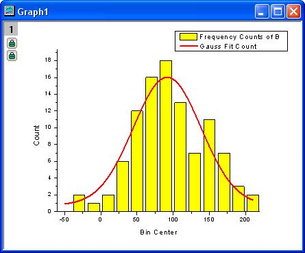
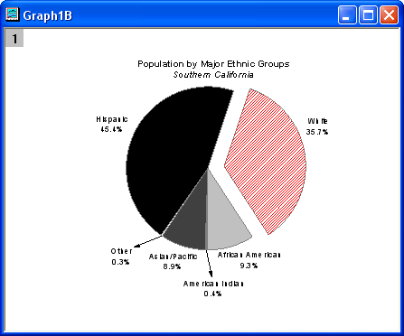
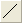
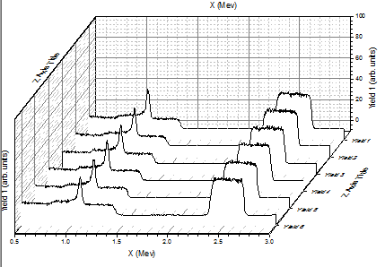

カスタマイズの概要
Customizing-Graph
概要
Originグラフを編集するのは、とても簡単です。 どのグラフ要素でも選択でき、それに関連するダイアログボックスを開いて、プロパティを編集することができます。 グラフ全体から1つのデータポイントまで編集することができます。
このチュートリアルでは、以下の項目について説明します。
- レイヤサイズの変更
- レイヤタイトルを追加
- グラフテンプレートの編集と保存
- 軸の編集
- グラフテーマを適用
- レイヤ内のプロット順序を変更
- データポイントの変更
- グループ化したプロットの編集
- カラーマップのウォータフォールプロットの作成
レイヤのサイズ調整
- Samples\GraphingフォルダからCustomizing Graphs.OPJを開き、プロジェクトエクスプローラで、 Resize Graph and Customize Symbol フォルダを開きます。
- Graph2 をアクティブにして、レイヤ内のデータポイントの上方を右クリックし、レイヤタイトルの追加/変更を選択します。 以下のグラフ画像のようにタイトルを追加します。

- レイヤの大きさは、サイズハンドル(黒い四角)をドラッグするだけで簡単に変更できます。レイヤの大きさを変更するには、レイヤ内部のデータポイントではないところでクリックします。下図のようにレイヤが選択状態になり、8つのアンカーポイントのうち1つをドラッグして、レイヤの大きさを変更できます。 Note: Ctrlキーを押しながらドラッグすると、縦横比が保持されます。

- また、詳細に大きさを指定するには、作図の詳細ダイアログを使って、レイヤの大きさを入力します。レイヤ内部をダブルクリックして、作図の詳細ダイアログを開きます。 レイヤの大きさ・描画スピードタブを開き、レイヤの大きさを下図に示す値にセットします。
| Note：軸の長さをリンクするX:Yの比率にチャックを入れ、レイヤサイズを変更しても、XとYのスケールの縦横比を変えないようにするために、X軸とY軸の長さ（レイヤの「幅」と「高さ」の比率）を設定します。隣にあるボックスで比率を設定することが出来ます。
|
データプロットと軸の編集
ここでは、データプロットの色を変更する方法と軸を編集する方法を説明します。
- Graph2 のデータポイントの1つをクリックし、「スタイル」ツールバーの線/境界色ボタン
 を使って、データポイントの色を赤に変更します。
を使って、データポイントの色を赤に変更します。
- 次に、軸ダイアログを使って、軸をカスタマイズします。 X軸をダブルクリックして、ダイアログを開き、次のように設定します。
- スケールページの水平アイコンをクリックし、主目盛のタイプをカウントにし、カウントに5を入力します。
- スケールページの垂直アイコンをクリックし、開始を0、終了を16に変更し、主目盛のタイプをカウントにしてカウントを11に設定します。
- 軸と軸目盛タブに移動し、左側パネルの上と下をCtrlボタンを押しながらクリックして選択します。Y軸の項目も選択されたら、軸と軸目盛の表示にチェックを付け、上X軸と右Y軸を表示します。OKをクリックしてこの設定を適用して、ダイアログを閉じます。下図のようなグラフになります。

グラフテンプレートの保存と再利用
このセクションでは、ここまでで作成したグラフをテンプレートとして保存し、再利用する方法を紹介します。
- メニューからファイル：テンプレートの新規保存を選択し(別の方法としては、グラフウィンドウタイトルを右クリックして、テンプレートの新規保存を選択)、テンプレートにMyGraphTemplateという名前を付けます。OKボタンをクリックして保存します。
- 新しいワークブックを作成し、データ：ファイルに接続：Text/CSVツールを使ってデータファイル\Samples\Curve Fitting\Sensor2.datをインポートします。B列を選択し、作図：マイテンプレート：MyGraphTemplateと選択してグラフを作成します。
グラフは次のようになります。

| Note：バッチ作図ツールを使って、同じデータ構造を持つ異なるワークシート/ワークブックから一度に複数のグラフを作成することも出来ます。このツールがどのように機能するかはこちらのチュートリアルをご参照ください。
|
テーマを使用したグラフ編集
Originは、グラフのプロパティをテーマファイルに保存できます。このセクションでは、テーマを使って、グラフをカスタマイズする方法を説明します。
- Graph3をアクティブにした後、メニューから環境設定：テーマオーガナイザを選択して、ダイアログを開きます。テーマ名Times New Roman Font を選択して、今すぐ適用ボタンをクリックします。テーマ名Ticks All Inを選択して、今すぐ適用ボタンをクリックし、閉じるボタンをクリックしてダイアログを閉じます。グラフは下図のようになります。
- 次に現在のグラフのフォーマットをコピーして、Graph2に貼り付けます。レイヤの右側の白い空白の領域または灰色の領域を右クリックし、フォーマットのコピー：全てのスタイルフォーマットを選択します。Graph2をアクティブにしてから先程と同じような箇所を右クリックし、コンテキストメニューからフォーマットの貼り付けを選びます。すると、Graph2は、下図のようになります。

プロット順序
データプロットの順序変更はレイヤ内容ダイアログ、オブジェクトマネージャー
、または作図のセットアップダイアログから行えます。
\Samples\Graphing フォルダからCustomizing Graphs.OPJを開き、プロジェクトエクスプローラで、 Plotting Orderフォルダを開きます。
レイヤ内容ダイアログを使用
- Graph 1ウィンドウをアクティブにします。レイヤ1のアイコン上でダブルクリックして、レイヤの内容を選択します。
- ＞＞ボタンをクリックし、左側パネルを閉じます。右側パネルで、折れ線グラフGauss Fit Countを選択します。下向き矢印ボタンをクリックして折れ線グラフのプロット順序を変更します。
- 適用ボタンをクリックします。棒グラフの上にガウスフィット曲線が表示されます。閉じるボタンをクリックしてダイアログを閉じます。
オブジェクトマネージャー
- Graph 1ウィンドウをアクティブにします。初期設定では、Originの右隅にあるオブジェクトマネージャーを、マウスをオブジェクトマネージャーバーに合わせて広げます。
- Gauss Fit Count lineの上で右クリックし、メニューから上へ移動を選択します。
- 赤いプロットがヒストグラムの後ろに移動します。
作図のセットアップダイアログを使用
- 前のサンプルで使用したものと同じデータを使用します。Plotting Order フォルダのGraph 1をアクティブにします。メインメニューのグラフ操作：作図のセットアップと選択して作図のセットアップダイアログを開きます（グラフ左上にあるレイヤアイコン1を右クリックして作図のセットアップを選択しても開けます）。
 | 作図のセットアップダイアログで3つのパネルを全ての表示するために ボタンをクリックしてグラフタイプパネルを開き、再度をクリックして利用可能なデータパネルを開きます。 ボタンをクリックしてグラフタイプパネルを開き、再度をクリックして利用可能なデータパネルを開きます。
詳細な情報は作図のセットアップで作図を参照してください。
|
- プロットリストパネルで、折れ線グラフをドラッグし、縦棒/横棒の下にドロップします。
- OKボタンをクリックすると、赤い曲線が前面に表示されます。 凡例も新しいプロット順序が反映されます。

データポイントを編集
ここでは、プロットの内1つのポイントを編集する方法を説明します。
- 引き続きPlotting Orderフォルダのデータを使用します。Graph1がアクティブになっていることを確認します。棒グラフ上で１度クリックすると全ての棒が選択されます。 もう一度クリックすると、1つの曲線だけが選択されます。 そして、「スタイル」ツールバーの「オブジェクトの塗り色」ボタン
 を使って、色を緑に変更します。
を使って、色を緑に変更します。
- 作図の詳細ダイアログを使って、1つの縦棒グラフを編集することもできます。Ctrl キーを押しながら、縦棒グラフの1つをダブルクリックし、作図の詳細ダイアログを開きます。 このダイアログでは、1つのデータポイントのプロパティだけを編集できます。 作図の詳細ダイアログの左パネルで選択したデータポイントのインデックスが選択された状態であることを確認しましょう。 黄色から赤色に徐々に変化するように階調色グループを以下のように設定します。
グラフは次のようになります。
- 同じ方法で円グラフの要素１つを編集できます。Edit Single Data Point フォルダに移動し、円グラフをアクティブにします。Ctrl キーを押しながら、スライスの1つをダブルクリックし、作図の詳細ダイアログを開きます。パターンタブで、ドロップダウンリストから塗りつぶしパターンを密にし、パターンの色を赤にします。(別の方法として、ゆっくりと2回クリックし、そのスライスだけを選択し、スタイルツールバーを使用してそのポイントを編集します。) グラフは下図のようになります。

- 1つのデータポイントを編集し、それにラベルを付けることができます。Resize Graph and Customize Symbol フォルダに移動します。Ctrl キーを押しながら、散布図データの1つをダブルクリックし、作図の詳細ダイアログを開きます。 シンボルタブで、三角形のプレビューボタンをクリックし、シンボルギャラリーを開き、形状で球を選びます。 サイズを18まで大きくし、OKボタンをクリックしてダイアログを閉じます。
- 次に、注釈ツールを使って、編集したデータポイントに対応するXとY値を追加します。プロット操作・オブジェクト作成のツールバーにあるデータラベルボタンをクリックします。（ヒント：データリーダとデータラベル、データカーソルはグループ化されています。データラベルツールが見つからない場合、ボタン右下にある三角形をクリックすると現在表示されていないツールを選択できます。）
そして、データラベルカーソルをデータポイントまで移動し、データポイント上でダブルクリックします。これにより、自動的にテキストオブジェクトが追加されます。 ESCキーを押すか、ポインタツールをクリックして、データラベルツールを解除します。 シングルクリックして選択してドラッグすればテキストオブジェクトを移動できます。位置を移動しても、ラベルから伸びた線はラベルとデータポイントを常に結びます。

テキストオブジェクトの上で右クリックします。プロパティ...を選択し、テキストオブジェクト ダイアログを開きます。テキストのラベルをこのダイアログにて編集できます。 テキストタブで、編集ボックスに %(1,@LL)=$(Y,.2) %(1,@LU) と入力します。編集ボックスの右にあるボタン にて、いくつかのfrequently used notationsやシンタックス例を作ることが出来ます。

| Origin 2017移行では、見出しラベルをドラッグして移動できるようになりました。ポインタボタン をクリックして、ALTキーを押して十字カーソルでラベルをドラッグして移動します。 をクリックして、ALTキーを押して十字カーソルでラベルをドラッグして移動します。
|
グループ化プロット
１つ前のセクションでは、グラフ内の単一データポイントを編集しました。このセクションでは、グループ化されたデータプロットを編集する方法を説明します。
- Grouped Data フォルダを開きます。 Book3 がアクティブになっています。 そして、ワークシート全体を選択し、2Dグラフギャラリーツールバーで折れ線グラフボタン  をクリックし、折れ線グラフを作成します。
- X軸をダブルクリックして、軸ダイアログボックスを開きます。スケールの開始を0.5にし、終了を3.0に変更します。再スケール方式ドロップダウンリストから固定を選択します(リスト内でスクロールする必要があります。)。これは、再スケール時に、開始と終了の値が変更されるのを防ぎます。 OK をクリックして、これらの設定を適用します。
- レイヤの内部の折れ線グラフの上部にある、空白の領域でダブルクリックし、作図の詳細ダイアログを開きます。積上げ形式タブで、オフセットグループを自動にします。OK をクリックしてダイアログを閉じます。
- グラフ操作：再スケールして全てを表示を選択します。 グラフのYスケールが自動的に再スケールしますが、Xスケールは再スケール方式オプションで手動にセットされているので、変更されません。レイヤの大きさを変更して、好みに合せて凡例を移動してみてください。
- データプロットの1つをクリックして全体を選択し、スタイルツールバーの線/境界の色ボタンを使って、色を変更します。プロット毎タブをクリックして、以下の推移リストからQ03 Rainbow7を選択します。

- 最初の推移リストを選択します。グラフは次のようになります。

- これらのデータプロットはグループ化していますが、データプロットを2回クリックすることで、それぞれのデータプロットを個別に編集することができます。例えば、黄色のデータポイントを2回クリックして、スタイルツールバーの線/境界の色ボタン を使って、色をオリーブなどの別の色に変更します。
- データプロットの1つをダブルクリックして、作図の詳細ダイアログを開いて、グラフを編集することもできます。 グラフグループタブで、詳細列内のフィールドをクリックし、参照ボタンをクリックします。
推移リストエディタダイアログが開きます。このダイアログで、次の図のようにグラフを編集します。行のインデックスをドラッグして移動し、カラーリストの順序を変更することができます。
- 推移リストエディタダイアログの内部を右クリックして、推移リストを保存を選択し、この推移リストを繰り返し使用のためにMyPallete という名前で保存します。右クリックして、コンテキストメニューから推移リストをロードを選択します。次の図のようにMyPalleteがフライアウトメニューの最初の項目として表示されます。
次に、データプロットグループの色を設定するパレットの使用方法を説明します。
- Book3をアクティブにし、すべての列を選択します。メニューから作図： ３D：ウォーターフォールを選び、グラフを作成します。X軸をダブルクリックして、軸ダイアログを開き、スケールタブで開始を0.5、終了を3に設定します。選択リストからY アイコンを選択し、 スケール タブにある、開始と 終了と主目盛 オプションの 推移 を-10、開始と終了を100 と 20にそれぞれ変更します。

- データプロットの1つをクリックし、スタイルツールバーの線/境界の色ボタンをクリックして、色を変更します。ポイント毎タブのパレットリストにあるRainbow パレット を選択します。グラフは下図のようになります。
- プロットの1つをダブルクリックし、次の図のようにカラーリストを表示します。
推移がビン化に設定され、色はRainbow パレットで利用可能な256色から適用されています。
- パレットをReefに変更しましょう。参照ボタンをクリックして、推移項目エディタダイアログを開きます。このダイアログの内部を右クリックして、パレットをロード: Reefをを選択し、OKをクリックします。作図の詳細ダイアログにある色リストは、次の様に表示されていますので、
OKをクリックしてPlot Details ダイアログを閉じます。下図のようなグラフになります。